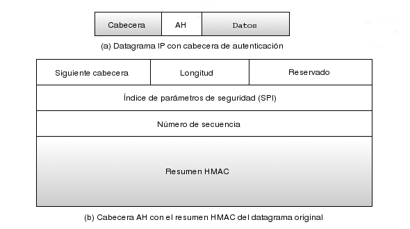

La Cabecera de Autenticación o AH1.13proporciona en el ámbito de IPSec la autenticación del emisor y la integridad del mensaje mediante el cálculo de un código HMAC1.14. Una vez ambos extremos han establecido una SA, utilizan la clave acordada durante el intercambio inicial como clave simétrica con la que generar los resúmenes que se incluyen en las cabeceras. Sólo ambos extremos conocedores de la clave podrán calcular los resúmenes y verificar la integridad del paquete. Del mismo modo, un resumen que se corresponde con los contenidos de un paquete garantiza la autenticación del emisor, ya que sólo éste conocerá la clave con la que generar el resumen.
En AH, el resumen es calculado sobre la carga útil del paquete y las cabeceras estáticas del mismo, esto es, aquellas que no se modificarán durante el proceso, lo cual incluye las direcciones IP de origen y destino. Esto provoca que AH tenga graves problemas para tratar con NAT1.15, ya que las pasarelas que utilizan este protocolo modifican la dirección IP de origen de los paquetes salientes, y la dirección IP de destino de los paquetes entrantes, acción que precisamente AH se encarga de detectar1.16.
|

|
No entraremos a explicar en detalle las cabeceras utilizadas por este protocolo, mostradas en la figura 1.7. Puede ampliarse información en [9].